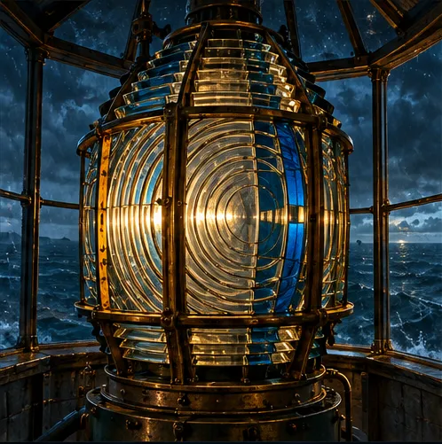

I designed this for fun to explore how to make ratios and rates more exciting for 6th grade math students. This idea was inspired by conversations with my middle school students a few years ago. It stuck with me, and so here’s what I would build for them if I were still in the classroom. I designed the learning sequence, practice, and feedback, then built the playable prototype with Claude Design, Claude Code, and ChatGPT. It’s a self-paced browser activity for independent or classroom use.
Light the Beacon
About this prototype: the activity design is my own. The images are concept mockups I generated with ChatGPT for this proof of concept, and I built the interaction with Claude Design and Claude Code.
Three design decisions to support learning
- Make the math visible.Learners build the lens ratio with tiles, extend a ratio table, and use a double number line to reason about the radio rate.
- Offer support without adding pressure.Every room offers an optional three-part practice and three hints that move from a guiding question to a concrete next step.
- Make room for learners to explain.In the signal gallery, learners set each dial from their logbook clues, test the signal, and pick the two reasons it works.
Want the details?
Room by room
Built on Common Core 6.RP.A.3 ↗, mainly 3a (equivalent ratios and ratio tables) and 3b (unit rates). Each room pairs one part of the standard with a hands-on choice, an optional practice round, three hints, and feedback for each kind of mistake.

- What is the ratio of blue to gold? How many lights are in one group of that ratio?
- The lens has 20 spots. How many groups of 5 is that?
- Four groups of 2 blue and 3 gold is how many of each? The 4 stuck gold panels count too.
Not covered: plotting ratio pairs (part of 3a), percents (3c) and unit conversions (3d). Learners can also type answers instead of turning the dials.
From standard to activityHow Common Core 6.RP.A.3 maps to essential questions, “I can” goals and rooms
Not covered: plotting ratio pairs (part of 3a), percents (3c) and unit conversions (3d).